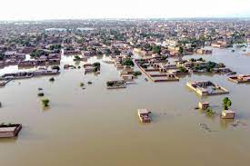
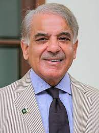
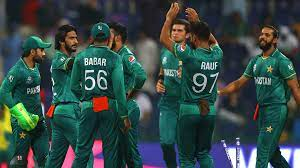

Pakistan right now is experiencing climate change and some world disasters. World disasters are dangerous floods. The death toll in Pakistan floods is above 1,200 and 1/3 of them are children. The floods are so dangerous that people are forced to leave their homes. Pakistan current prime-minister. Pakistan's current PM is Shehbaz Sharif who was recently elected in 2022 but before him was Imran khan from 2018-2022.
 Pakistan is very good at cricket. It is one of the best cricket teams in the world. Right now their current team is babar azam as batsman and captain and shaeen afridi as the bowler agha salman etc. Right now Pakistan has played 945 odi matches and won 498 matches and pakistan has played 197 t20 matches winning 120 and losing 69.
Pakistan is the 33rd country by area. Pakistan is the 9th most powerful country in the world.Pakistan has the world's 2nd tallest mountain which is k2 mountain. Pakistan has the 42n rank of the most beautiful people. Pakistan is 4th in odi and icc cricket rank.